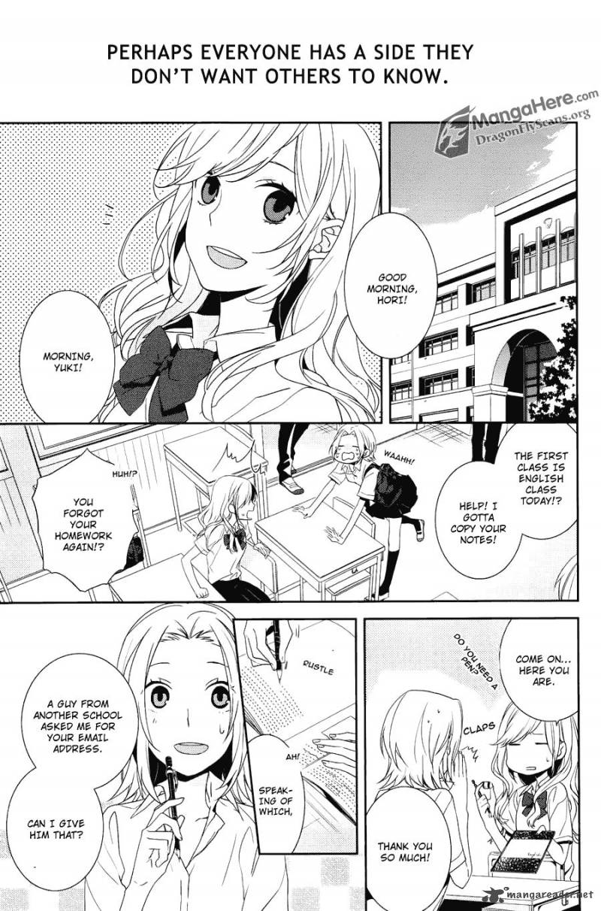

Romance
Horimiya
by Hiroki Adachi
Synopsis
Kyoko Hori is a popular and hardworking high school girl, while Izumi Miyamura appears to be a quiet and gloomy classmate. When they discover each other's hidden sides outside school, their unexpected friendship slowly blossoms into romance, teaching them about love, friendship, and accepting who they truly are.
Chapter 1: A New Side of Each Other

Kyoko Hori is admired by her classmates for her beauty and intelligence, but outside school, she spends most of her time taking care of her younger brother and managing household responsibilities.
One day, Hori meets Izumi Miyamura outside school and discovers that the quiet boy has a completely different appearance
— End of chapter —